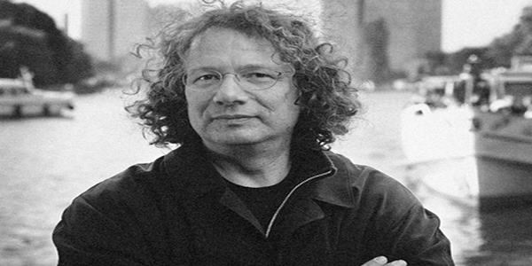
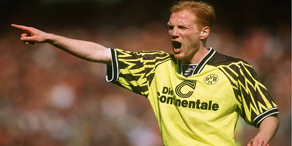
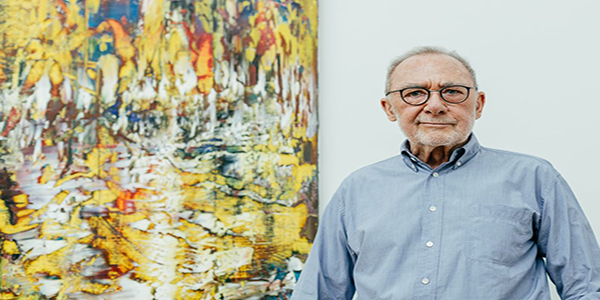
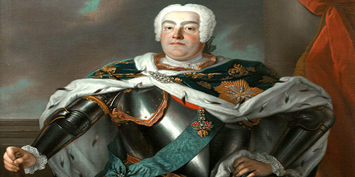
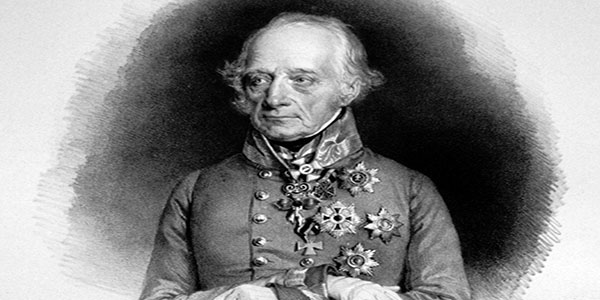

Ingo Schulze, Alman yazar ve romancıdır. Dresden şehrinde doğmuş ve büyümüştür. Schulze, Alman edebiyatının önemli isimlerinden biridir ve çeşitli roman ve hikaye kitapları yazmıştır.
Schulze'nin en ünlü romanları arasında "Adam und Evelyn" ve "33 Augenblicke des Glücks" sayılabilir. Ayrıca, Schulze, Almanya'nın en önemli yazarlarından biri olarak kabul edilir ve çeşitli ödüller almıştır.
Schulze, Dresden şehrinin ünlü yazarlarından biridir ve yöre halkı tarafından sıklıkla okunur. Schulze, Alman edebiyatının önemli isimlerinden biridir ve çeşitli roman ve hikaye kitapları yazmıştır.

Christiane Fürst, eski bir Alman şarkıcı ve oyuncudur. Fürst, Dresden şehrinde doğmuş ve büyümüştür. Fürst, Almanya'da çok popüler olan bir isimdir ve çeşitli şarkılar yaptı ve oyunculuk yaptı.
Fürst, eski bir şarkıcı olmasına rağmen hala Almanya'da önemli bir isimdir ve çeşitli müzik programlarında yorumcu olarak görev yapar. Fürst, Dresden şehrinin ünlü şarkıcılarından biridir ve yöre halkı tarafından sıklıkla anılır.
Fürst, Almanya'da çok popüler olan bir isimdir ve şarkıları ve oyunculuğu ile ünlüdür. Fürst, eski bir şarkıcı olmasına rağmen hala Almanya'da önemli bir isimdir ve çeşitli müzik programlarında yorumcu olarak görev yapar.
Robert Siodmak, eski bir Alman yönetmen ve senaristtir. Siodmak, Dresden şehrinde doğmuş ve büyümüştür. Siodmak, Almanya'da çok popüler olan bir isimdir ve çeşitli filmler yönetmiş ve senaryo yazmıştır.
Siodmak, Dresden şehrinin ünlü yönetmenlerinden biridir ve yöre halkı tarafından sıklıkla anılır. Siodmak, Almanya'da çok popüler olan bir isimdir ve filmleri ile ünlüdür.
Siodmak, çeşitli ödüller almış ve yönetmenlik ve senaryo yazarlığı kariyeri sırasında önemli bir yere sahiptir. Siodmak, Almanya'da çok popüler olan bir isimdir ve filmleri ile ünlüdür.

Theo Adam, eski bir Alman oper sanatçısıdır. Adam, Dresden şehrinde doğmuş ve büyümüştür. Adam, Almanya'da çok popüler olan bir isimdir ve çeşitli operalarda rol almıştır.
Adam, Dresden şehrinin ünlü oper sanatçılarından biridir ve yöre halkı tarafından sıklıkla anılır. Adam, Almanya'da çok popüler olan bir isimdir ve operaları ile ünlüdür.
Adam, çeşitli ödüller almış ve oper sanatçılığı kariyeri sırasında önemli bir yere sahiptir. Adam, Almanya'da çok popüler olan bir isimdir ve operaları ile ünlüdür. Adam, Almanya'da çok popüler olan bir isimdir ve operaları ile ünlüdür.
Michael Gielen, eski bir Alman dirigent ve bestecidir. Gielen, Dresden şehrinde doğmuş ve büyümüştür. Gielen, Almanya'da çok popüler olan bir isimdir ve çeşitli dirigentleme ve bestecilik görevlerinde bulunmuştur.
Gielen, Dresden şehrinin ünlü dirigentlerinden ve bestecilerinden biridir ve yöre halkı tarafından sıklıkla anılır. Gielen, Almanya'da çok popüler olan bir isimdir ve dirigentleme ve bestecilik görevleri ile ünlüdür.
Gielen, çeşitli ödüller almış ve dirigentleme ve bestecilik kariyeri sırasında önemli bir yere sahiptir. Gielen, Almanya'da çok popüler olan bir isimdir ve dirigentleme ve bestecilik görevleri ile ünlüdür.

Matthias Sammer, eski bir Alman futbolcu ve teknik direktördür. Sammer, Dresden şehrinde doğmuş ve büyümüştür. Sammer, Borussia Dortmund, VfB Stuttgart ve Bayern Münih gibi takımlarda oynadı ve Alman Millî Futbol Takımı'nda da forma giydi.
Sammer, futbol kariyeri sırasında birçok ödül kazandı ve Almanya'da önemli bir yere sahiptir. Sammer, eski bir futbolcu olmasına rağmen hala futbol dünyasında önemli bir isimdir ve çeşitli futbol programlarında yorumcu olarak görev yapar.
Sammer, Dresden şehrinin ünlü futbolcularından biridir ve yöre halkı tarafından sıklıkla anılır. Sammer, eski bir futbolcu olmasına rağmen hala futbol dünyasında önemli bir isimdir ve çeşitli futbol programlarında yorumcu olarak görev yapar.

Gerhard Richter, Alman ressam ve çağdaş sanatçıdır. Richter, Dresden şehrinde doğmuş ve büyümüştür. Richter, Almanya'da çok popüler olan bir isimdir ve çeşitli resimler yaptı. Richter, özellikle abstrakt resimlerle tanınmıştır ve çağdaş sanat dünyasında önemli bir yere sahiptir.
Richter, Dresden şehrinin ünlü ressamlarından biridir ve yöre halkı tarafından sıklıkla anılır. Richter, Almanya'da çok popüler olan bir isimdir ve resimleri ile ünlüdür. Richter, özellikle abstrakt resimlerle tanınmıştır ve çağdaş sanat dünyasında önemli bir yere sahiptir.
Richter, çeşitli ödüller almış ve sanat dünyasında önemli bir isimdir. Richter'in resimleri, dünyanın çeşitli galerilerinde sergilenmiş ve sanatseverler tarafından sıklıkla ziyaret edilmiştir.
Stephanie Stumph, Alman oyuncu ve sunucudur. Stumph, Dresden şehrinde doğmuş ve büyümüştür. Stumph, Almanya'da çok popüler olan bir isimdir ve çeşitli filmlerde, dizilerde ve tiyatro oyunlarında rol almıştır.
Stumph, Dresden şehrinin ünlü oyuncularından biridir ve yöre halkı tarafından sıklıkla anılır. Stumph, Almanya'da çok popüler olan bir isimdir ve filmleri, dizileri ve tiyatro oyunları ile ünlüdür.
Stumph, çeşitli ödüller almış ve oyunculuk kariyeri sırasında önemli bir yere sahiptir. Stumph, Almanya'da çok popüler olan bir isimdir ve filmleri, dizileri ve tiyatro oyunları ile ünlüdür.
Tom Wlaschiha, Alman oyuncudur. Wlaschiha, Dresden şehrinde doğmuş ve büyümüştür. Wlaschiha, Almanya'da çok popüler olan bir isimdir ve çeşitli filmlerde, dizilerde ve tiyatro oyunlarında rol almıştır.
Wlaschiha, Dresden şehrinin ünlü oyuncularından biridir ve yöre halkı tarafından sıklıkla anılır. Wlaschiha, Almanya'da çok popüler olan bir isimdir ve filmleri, dizileri ve tiyatro oyunları ile ünlüdür.
Wlaschiha, çeşitli ödüller almış ve oyunculuk kariyeri sırasında önemli bir yere sahiptir. Wlaschiha, Almanya'da çok popüler olan bir isimdir ve filmleri, dizileri ve tiyatro oyunları ile ünlüdür.
Thomas Fritsch, eski bir Alman oyuncu ve seslendirme sanatçısıdır. Fritsch, Dresden şehrinde doğmuş ve büyümüştür. Fritsch, Almanya'da çok popüler olan bir isimdir ve çeşitli filmlerde, dizilerde ve tiyatro oyunlarında rol almıştır.
Fritsch, Dresden şehrinin ünlü oyuncularından biridir ve yöre halkı tarafından sıklıkla anılır. Fritsch, Almanya'da çok popüler olan bir isimdir ve filmleri, dizileri ve tiyatro oyunları ile ünlüdür.
Fritsch, çeşitli ödüller almış ve oyunculuk kariyeri sırasında önemli bir yere sahiptir. Fritsch, Almanya'da çok popüler olan bir isimdir ve filmleri, dizileri ve tiyatro oyunları ile ünlüdür. Ayrıca, Fritsch, çeşitli seslendirme çalışmaları yapmış ve çeşitli animasyon filmlerinde seslendirme yapmıştır.
Claudia Michelsen, Alman oyuncudur. Michelsen, Dresden şehrinde doğmuş ve büyümüştür. Michelsen, Almanya'da çok popüler olan bir isimdir ve çeşitli filmlerde, dizilerde ve tiyatro oyunlarında rol almıştır.
Michelsen, Dresden şehrinin ünlü oyuncularından biridir ve yöre halkı tarafından sıklıkla anılır. Michelsen, Almanya'da çok popüler olan bir isimdir ve filmleri, dizileri ve tiyatro oyunları ile ünlüdür.
Michelsen, çeşitli ödüller almış ve oyunculuk kariyeri sırasında önemli bir yere sahiptir. Michelsen, Almanya'da çok popüler olan bir isimdir ve filmleri, dizileri ve tiyatro oyunları ile ünlüdür.
Carina Wiese, Alman oyuncudur. Wiese, Dresden şehrinde doğmuş ve büyümüştür. Wiese, Almanya'da çok popüler olan bir isimdir ve çeşitli filmlerde, dizilerde ve tiyatro oyunlarında rol almıştır.
Wiese, Dresden şehrinin ünlü oyuncularından biridir ve yöre halkı tarafından sıklıkla anılır. Wiese, Almanya'da çok popüler olan bir isimdir ve filmleri, dizileri ve tiyatro oyunları ile ünlüdür.
Wiese, çeşitli ödüller almış ve oyunculuk kariyeri sırasında önemli bir yere sahiptir. Wiese, Almanya'da çok popüler olan bir isimdir ve filmleri, dizileri ve tiyatro oyunları ile ünlüdür.
Martin Brambach, Alman oyuncudur. Brambach, Dresden şehrinde doğmuş ve büyümüştür. Brambach, Almanya'da çok popüler olan bir isimdir ve çeşitli filmlerde, dizilerde ve tiyatro oyunlarında rol almıştır.
Brambach, Dresden şehrinin ünlü oyuncularından biridir ve yöre halkı tarafından sıklıkla anılır. Brambach, Almanya'da çok popüler olan bir isimdir ve filmleri, dizileri ve tiyatro oyunları ile ünlüdür.
Brambach, çeşitli ödüller almış ve oyunculuk kariyeri sırasında önemli bir yere sahiptir. Brambach, Almanya'da çok popüler olan bir isimdir ve filmleri, dizileri ve tiyatro oyunları ile ünlüdür.

III. August, eski bir Alman prensidir. III. August, Dresden şehrinde doğmuş ve büyümüştür. III. August, Almanya'da çok popüler olan bir isimdir ve çeşitli resmi görevlerde bulunmuştur.
III. August, Dresden şehrinin ünlü prenslerinden biridir ve yöre halkı tarafından sıklıkla anılır. III. August, Almanya'da çok popüler olan bir isimdir ve resmi görevleri ile ünlüdür.
III. August, çeşitli ödüller almış ve prenslik kariyeri sırasında önemli bir yere sahiptir. III. August, Almanya'da çok popüler olan bir isimdir ve resmi görevleri ile ünlüdür.

Heinrich von Bellegarde, eski bir Avusturyalı asker ve politikacıdır. Bellegarde, Dresden şehrinde doğmuş ve büyümüştür. Bellegarde, Avusturya'da çok popüler olan bir isimdir ve çeşitli askeri ve politik görevlerde bulunmuştur.
Bellegarde, Dresden şehrinin ünlü askerlerinden ve politikacılarından biridir ve yöre halkı tarafından sıklıkla anılır. Bellegarde, Avusturya'da çok popüler olan bir isimdir ve askeri ve politik görevleri ile ünlüdür.
Bellegarde, çeşitli ödüller almış ve askeri ve politik kariyeri sırasında önemli bir yere sahiptir. Bellegarde, Avusturya'da çok popüler olan bir isimdir ve askeri ve politik görevleri ile ünlüdür.
Frederick Christian, eski bir Alman prensidir. Frederick Christian, Dresden şehrinde doğmuş ve büyümüştür. Frederick Christian, Almanya'da çok popüler olan bir isimdir ve çeşitli resmi görevlerde bulunmuştur.
Frederick Christian, Dresden şehrinin ünlü prenslerinden biridir ve yöre halkı tarafından sıklıkla anılır. Frederick Christian, Almanya'da çok popüler olan bir isimdir ve resmi görevleri ile ünlüdür.
Frederick Christian, çeşitli ödüller almış ve prenslik kariyeri sırasında önemli bir yere sahiptir. Frederick Christian, Almanya'da çok popüler olan bir isimdir ve resmi görevleri ile ünlüdür.